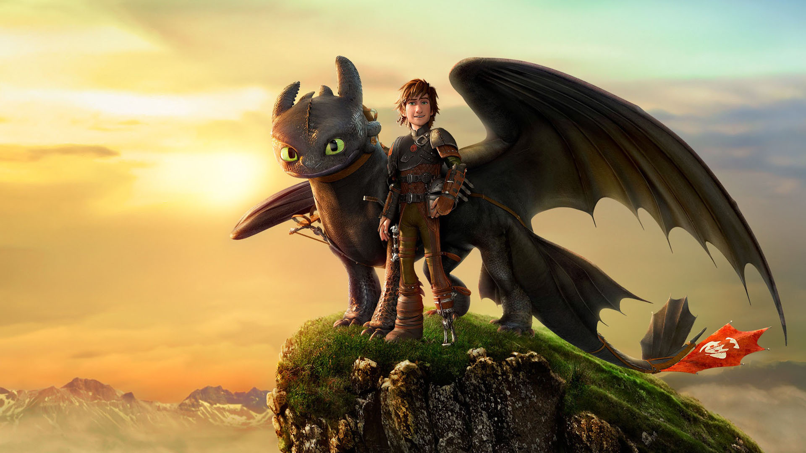

Now that you are a Python Ninja,
Let's use a library to build the game
We will usepygame
Otherwise, refer to this slide
Specifications of the game
Screen(Canvas)
Width: 900
Height: 600
Color: Black
Ball
Radius: 20
Initial position: X=(width/2), Y=(height/2)
Velocity: random value [Use random.choice() in form of (x, y)]
Color: Red
Pad
Width: 10
Height: 100
Color: Green
Boundary for pad
Color: White
Refer back to this while coding this later
Let's warm things up...
import pygame
# '#' symbol is used for comments
#always call this before using pygame functions
pygame.init()
Use this link to see the documentation of Pygame!
Documentations might be boring, but no better alternatives exist till date :/
Start with some colors
WHITE = (255,255,255)
RED = (255,255,0)
GREEN = (0,255,0)
BLACK = (0,0,0)
Colors are defined in RGB (Red, Green, Blue) format
Lets get our canvas ready
SCREEN_SIZE = SCREEN_WIDTH, SCREEN_HEIGHT = (900, 600)
screen = pygame.display.set_mode(SCREEN_SIZE)
screen.fill(BLACK)
pygame.display.set_mode() takes a tuple as an argument. That tuple is the width and height.
Moving Ahead with the Ball
ball_centre = (SCREEN_WIDTH/2, SCREEN_HEIGHT/2)
ball_radius = 20
ball = pygame.draw.circle(screen, RED, ball_centre, ball_radius)
pygame.draw.circle() takes in 4 arguments: canvas, color, position and radius
Understanding the math behind the pads
Coding the paddle
Conditional Statements
Enhancing the if-conditions
PADDLE_LENGTH = 100
PADDLE_WIDTH = 10
paddle_1_top = (4, (SCREEN_HEIGHT/2) - (PADDLE_LENGTH/2))
paddle_1_bottom = (4, (SCREEN_HEIGHT/2) + (PADDLE_LENGTH/2))
paddle1 = pygame.draw.line(screen, GREEN, paddle_1_top, paddle_1_bottom, PADDLE_WIDTH)
pygame.draw.line() has 4 mandatory arguments: screen, color, top position, bottom position and 1 optional argument: width
Write the code for paddle 2 and boundary lines
Run your python code... A new static game screen should load
To exit the game, go to terminal again and press Ctrl + C
Hopefully you have made a screen something that looks like this:

In case you don't have the file you made, here's the starter code for you :)
Click here to download the starter code
Say hi to Newton!!

Let's get the Physics of the game
Moving the objects
Ball
Velocity: (x1, y1)
Every few milliseconds the position of the ball
changes by x1 units in X axis and y1 unit in Y axis
Paddle
Velocity: (0, y2)
Every keystroke the position of the paddle changes vertically
Some initial velocities:
ball_velocity = (1, random.choice(range(-10, 10)))
paddle1_velocity = (0,0)
paddle2_velocity = (0,0)
Let's make use of functions
Hope you know how to write functions
#function to calculate new position
def get_new_position(pos, vel):
return (pos[0] + vel[0], pos[1] + vel[1]
Pay special attention to indentation and colon (:)
Let's change the position of the ball
Type this code inside the while loop
#ball_center changes based on the current ball_center
#and ball velocity specified
ball_center = get_new_position(ball_center, ball_velocity)
#draw the new ball
ball = pygame.draw.circle(screen, RED, ball_center, BALL_RADIUS)
#update the changes on the screen
python.display.update()
Changing the position means changing the coordinates of the centre of the ball
How to train your dragon? :P
Moving Ahead ...
Controlling collisions
# Checking for bottom and top of the screen
if (ball_center[1]+BALL_RADIUS > SCREEN_HEIGHT
or ball_center[1]-BALL_RADIUS < 0):
ball_velocity = (ball_velocity[0], -ball_velocity[1])
Taking care in the Y-axis
Moving Ahead ...
Controlling collisions
if (ball_center[0] + BALL_RADIUS > BOUNDARY_RIGHT_TOP[0]
or ball_center[0] - BALL_RADIUS < BOUNDARY_LEFT_TOP[0]):
ball_velocity = (-ball_velocity[0], ball_velocity[1])
Taking care in the X-axis
BOUNDARY_LEFT_TOP and BOUNDARY_RIGHT_TOP are defined in the starter code
Simplicity of pygame
Events
Examples of Events:
KEYDOWN
KEYUP
QUIT
MOUSECLICK
...
All these are inbuilt in Pygame :)
To know more about our events, click here :P
Capturing pygame events
pygame.event.get() -> Returns a list of events
Avoiding Ctrl + C
Activating the 'close' button of the window
for event in pygame.event.get():
if event.type == pygame.QUIT:
pygame.quit()
sys.exit()
Doing things with keyboard
Let's make the paddle move
#.... Continued from if statement after pygame.QUIT
elif event.type == pygame.KEYDOWN:
if event.key == pygame.K_UP:
paddle2_velocity = (0, -1)
elif event.key == pygame.K_DOWN:
paddle2_velocity = (0,1)
elif event.key == pygame.K_w:
paddle1_velocity = (0, -1)
elif event.key == pygame.K_s:
paddle1_velocity = (0, 1)
Adding code for KEYUP
#... Continued from the elif statement after pygame.KEYDOWN
elif event.type == pygame.KEYUP:
if event.key == pygame.K_UP or pygame.K_DOWN:
paddle2_velocity = (0,0)
#add KEYUP handler for paddle 1
Update paddle position
paddle2_top = get_new_position(paddle2_top, paddle2_velocity)
paddle2_bottom = get_new_position(paddle2_bottom, paddle2_velocity)
Note: We are using the same function that we made for the ball. Most important use of functions: reusability
Did you notice something?
Your paddle goes beyond the screen. Let's fix that!
Fixing the paddle
Modify the previous code
p2_new_top = get_new_position(paddle2_top, paddle2_velocity)
p2_new_bottom = get_new_position(paddle2_bottom, paddle2_velocity)
if (p2_new_top[1] > 0 and p2_new_bottom[1] < SCREEN_HEIGHT):
paddle2_top = p2_new_top
paddle2_bottom = p2_new_bottom
# Do the same for paddle 1
Bounding the statements by an if statement
A lot has been done...
Take a minute to revisit the slides
Now let's add interaction between the paddle and the ball
One final thing before the game can be played...
The ball talks to the paddle :D
if ball_center[0] + BALL_RADIUS > BOUNDARY_RIGHT_TOP[0]:
if (paddle2_top[1] < ball_center[1]
and paddle2_bottom[1] > ball_center[1]):
ball_velocity = (-ball_velocity[0], ball_velocity[1])
else:
ball_center = (SCREEN_WIDTH/2, SCREEN_HEIGHT/2)
ball_velocity = (-1, random.choice(range(-10, 10)))
Compare your game with ours
There are few good coding practices we have followed :)
Our source of knowledge
Show your running code to your friends and volunteers!
That's the complete game for you :)
Additional task : Add a score feature for both the players
If you have doubts, feel free to ask us. We are here to help you :)
Click here to five us a feedback. We will try to improve